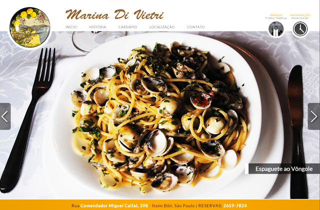

HTML5, CSS3, jQuery, Flash y otras cositas más...
Pessoal
Designer por Profissão. Front-End Entusiasta.
Ciclista Amador.
Fotógrafo de celular. Blogueiro quando entediado. Foodie. Internacionalista.
Carioca na Diáspora. Em São Paulo Há 8 Anos.
Todo mundo precisa de um objetivo na vida, então o meu, por enquanto,
é consolidar uma carreira como Webdesigner e
Desenvolvedor Front-End.
Profissional
Um Pouco Rodado Por Ai. Mas Quem Não É?-
Front-End Dev @ B2U Sistemas Ltda.
Responsável pelo Design e Front-End de diversos aplicativos da empresa - ATUAL
Casa Verde, São Paulo
-
Webdesigner Pl @ ContactoNET Ltda.
Atuando na elaboração do layout e desenvolvimento do front-end de todos os clientes da empresa - 2013/2014
Vila Mariana, São Paulo
-
Webdesigner Pl @ MidiasPrint Ltda.
Responsável pela criação e manutenção do site institucional e reelaboração do código de seus sites de e-comm - 2009/2013
Lapa, São Paulo
-
Designer @ Terra Networks
Contrato temporário na equipe de manutenção da nova identidade visual do Terra e tratamento de telas - 2009
Brooklin, São Paulo
-
Webdesigner Pl @ Interface-TI Ltda.
Responsável pela criação e manutenção do site institucional e reelaboração do código de seus sites de e-comm - 2005/2009
Flamengo/Gávea, Rio de Janeiro
-
Webdesigner Jr. @ Meu Provedor Ltda.
Responsável pela reformulação do portal da empresa, entre outros clientes - 2003
Centro, Rio de Janeiro
- html
- css
- js
- ps
- php
- html
- css
- js
- ps
- php
-
Cursos e Especializações
Formação Front-End @ Caelum - Desenvolvimento Web com HTML, CSS e JavaScript
- Programação front-end com JavaScript e jQueryWebDeveloper @ People Computers - HTML, XHTML, JavaScript
- ASP, VBScript, PHP / MySQLGraduação em WebDesign @ UNESA - Incompleto - 2001
-
Outras Habilidades
Conhecimento em Outras Ferramentas - Sublime Text e Dreamweaver
- Photoshop e Fireworks
- Flash e CorelDRAW
- SASS, Bootstrap e Grunt
Idiomas - Inglês (Avançado/Fluente)
- Alemão (Básico/Iniciante)
Portifólio
Vamos Ao Que Interessa, Não é Mesmo?-

PARA QUEM: B2U Sistemas
SOBRE O QUE: Software House
O QUE EU FIZ: Layout + Front-End
EU USEI: HTML + CSS3 + JQuery
Website: b2usistemas.com.br
Renovação do site institucional, utilizando conceitos mais modernos de HTML5 e CSS e retirando do WordPress. -
PARA QUEM: Marina Di Vietri
SOBRE O QUE: Restaurante Italiano
O QUE EU FIZ: Layout + Front-End
EU USEI: HTML + CSS3 + JQuery
Website: marinadivietri.com.br
O cliente possuía um site em Flash cujos originais já havia perdido. Precisava, então, de uma numa roupagem que pudesse ser também vista em em dispositivos móveis. -
PARA QUEM: ContactoNET
SOBRE O QUE: Agência Web
O QUE EU FIZ: Layout + Front-End
EU USEI: HTML + CSS3 + JQuery
Website: contactonet.com.br
Reformulação do site atual, valorizando mais o portifólio e os cases da empresa, além de implantção de visual diferenciado do tradicional aplicado. No momento aplicando responsividade para que fique coerente com o tipo de excelência no atendimento prestado. -
PARA QUEM: Potential Ltda.
SOBRE O QUE: Consultoria e Coaching
O QUE EU FIZ: Layout + Front-End
EU USEI: HTML + CSS3 + JQuery + Schema
Website: potential.com.br
Como o cliente era muito antigo a empresa ofereceu como brinde a redesign completo, incluindo novas telas de sistema internio, retirando as animações em Flash e deixando apenas web standards. Foi aplicado, também, microdatas na área de livros. -

PARA QUEM: Célia Brandão
SOBRE O QUE: Psicologia
O QUE EU FIZ: Layout + Front-End
EU USEI: HTML + CSS3 + JQuery
Website: celiabrandao.com
Site pessoal da Psicóloga Célia Brandão em substituição ao seu velho modelo do Blogspot. Sua instalação foi feita em Wordpress para maior flexibilidade da cliente. -

PARA QUEM: Motel Cachoeiras
SOBRE O QUE: Rede de Motéis
O QUE EU FIZ: Atendimento + Layout + Front-End
EU USEI: HTML + CSS3 + JQuery
Website: motelcachoeiras.com.br
O cliente pediu total reformulação do site e a eliminação das partes em Flash. Como bônus, estruturei responsividade tornando o site adaptável a tablets e outros dispositivos móveis. -

PARA QUEM: Globatech Services
SOBRE O QUE: Empresa de Engenharia
O QUE EU FIZ: Atendimento + Design + Front-End.
EU USEI: HTML + CSS3 + JQuery + SASS
Website: globatechservices.com
O cliente, de naturalidade alemã, precisava de um site para seu novo empreendimento no Brasil em três línguas. Com a versão em inglês e em alemão prontas o site já foi ao ar. Versão em Português em construção. -

PARA QUEM: Sara Biava
SOBRE O QUE: Consultoria e Gestão
O QUE EU FIZ: Atendimento + Design
EU USEI: Apenas Fireworks
Website: biava.com.br
A cliente precisava de um site simples e limpo para captar clientes em setores coligados a instituições religiosas. Foi oferecido, como cortesia, versões para dispositivos móveis. Posteriormente, outros websites como o mesmo padrão foram construídos. -

PARA QUEM: RELP Consultoria
SOBRE O QUE: Empresa de Consultoria
O QUE EU FIZ: Atendimento + Design + Front-End
EU USEI: HTML + CSS3 + JQuery
Website: relpconsultoria.com.br
Assumi a parte de design e, logo após, a de desenvolvimento. As ilustrações foram feitas à parte e a pedido do cliente foram inseridas em diversas partes do texto. A primeira versão foi construída utilizando SASS porém refiz sem utilizar a ferramenta. -
PARA QUEM: STH Plast
SOBRE O QUE: Comércio de Imóveis
O QUE EU FIZ: Atendimento + Layout + Front-End
EU USEI: HTML + CSS3 + JQuery + Mobile
Website: sthplast.com.br
Reformulação do site, com foco em imagens. A cliente também quis versões para tablets e smartphones. -

PARA QUEM: Recanto das Perdizes
SOBRE O QUE: Hotel
O QUE EU FIZ: Atendimento + Layout + Front-End
EU USEI: HTML + CSS3 + JQuery + Mobile
Website: recantodasperdizes.com.br
Construção de novo site. Foram criadas também versões para dispositvos móveis. -

PARA QUEM: Panelli
SOBRE O QUE: Comércio de Metalurgia
O QUE EU FIZ: Atendimento + Layout + Front-End
EU USEI: HTML + CSS3 + JQuery + Mobile
Website: panelli.com.br
Construção de site para WordPress. Foram criadas também versões para dispositvos móveis. -
PARA QUEM: Balanças Apollo
SOBRE O QUE: Balanças Industriais
O QUE EU FIZ: Design
EU USEI: Apenas Fireworks
Website: balancasapollo.com.br
Aqui o cliente possuia um site deveras antigo que foi modernizado e implantado no WordPress pela equipe de desenvolvimento. Site sem responsividade. -
PARA QUEM: Ortopedia Pedro de Toledo
SOBRE O QUE: Clínica Ortopédica
O QUE EU FIZ: Design + Front-End
EU USEI: HTML + CSS + jQuery
Website: ortopediapedrodetoledo.com.br
Meu primeiro site na fronteira que cruzei do WebDesign para as técnicas atuais de Desenvolvimento. Ponto seminal onde abandonei de vez o Dreamweaver (usando somente Sublime ou Brackets agora) e início do meu interesse em jQuery. -

PARA QUEM: Janahina Morena
SOBRE O QUE: Loja de Calçados
O QUE EU FIZ: Layout + Front-End.
EU USEI: HTML + CSS + Plugins jQuery
Website: janahinamorena.com.br/
Minha participação no projeto foi redesign da home, tratamento e alocação das imagens necessárias. Coleção muda frequentemente. -

PARA QUEM: Artemobília | Galeria
SOBRE O QUE: Empresa de Mobiliário
O QUE EU FIZ: Layout + Front-End.
EU USEI: HTML5 + CSS3 + JQuery
Website: artemobilia.com.br
Reformulação de site nos parâmetros pedidos pelo cliente de imagens abundantes. -
PARA QUEM: Travel Ace
SOBRE O QUE: Empresa do Ramo de Turismo
O QUE EU FIZ: Design da Engine.
Jogo da Memória utilizado em Eventos , que pode ser individual ou em modo de competição cujo código básico está pronto. A fácil personalização torna a migração para quase todas as necessidades dos clientes -
PARA QUEM: São Judas
SOBRE O QUE: Universidade
O QUE EU FIZ: Design da Engine
QUIZ utilizado em Eventos, que pode ser individual ou em modo de competição cujo código básico está pronto. A fácil personalização torna a migração para quase todas as necessidades dos clientes. -

PARA QUEM: Zenvia
SOBRE O QUE: Serviços Móveis
O QUE EU FIZ: Design + Refinamento da Engine.
EU USEI: Adobe Flash CS4
Website:
Jogo de ROLETA utilizado em Eventos rodando em Flash cujos ajustes em ActionScript não representam grandes desafios. Entretanto, a personalização é capciosa.
-

B2U Sistemas
＋
-

Marina DiVietri
＋
-
ContactoNET
＋
-

Potential
＋
-
Célia Brandão
＋
-
Motel Cachoeiras
＋
-
Globatech
＋
-
Sara Biava
＋
-
Relp Consultoria
＋
-
STH Plast
＋
-

Recanto das Perdizes
＋
-
Samsung | Fortraining
＋
-
Balanças Apollo
＋
-
Ortopedia Pedro de Toledo
＋
-

JANAHINA MORENA
＋
-
Artemobília
＋
-

Travel Ace
＋
-

São Judas
＋
-
Zenvia
＋
Contato
Bate Um Fio. Manda Um WhatsApp. Talvez Eu Possa Ajudar. +55 (11) 9 7972-7575mbsantiagojr@outlook.com